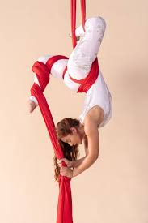
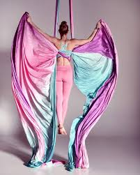

No solo es danza… es poderAtrévete a volar, atrévete a brillar.
Comienza tu experiencia
Danza Aérea
Maestra: Sonia
¿Qué es la Danza Aérea?: La danza aérea es una disciplina artística y deportiva donde el cuerpo se eleva utilizando telas.
Combina fuerza, flexibilidad, equilibrio y expresión artística.
Beneficios:
- ✨ Fortalece todo tu cuerpo
- ✨ Aumenta tu flexibilidad
- ✨ Mejora tu confianza
- ✨ Reduce el estrés
- ✨ Mejora tu postura
- ✨ Entrenamiento divertido
Horario: de Lunes a viernes - de 7:30 PM a 9:00 PM
Dirección: Pino Suárez 470, El Salado, 56524 La Magdalena Atlicpac, Méx.
Contacto:
55 9146 1227
Galería



Pole Dance
Maestra: Kari
¿Qué es el Pole Dance?: El Pole Dance es una disciplina que combina fuerza, elegancia y expresión corporal.
Se practica utilizando una barra vertical y mezcla elementos de danza, acrobacia y entrenamiento físico.
Beneficios:
- ✨ Fortalece brazos, abdomen y piernas
- ✨ Mejora la flexibilidad y movilidad
- ✨ Aumenta la confianza y autoestima
- ✨ Desarrolla equilibrio y coordinación
- ✨ Quema calorías mientras te diviertes
- ✨ Libera estrés y mejora el estado de ánimo
- ✨ Mejora la postura corporal
Horario: Martes y Jueves - 7:00 PM
Dirección: Pino Suárez 470, El Salado, 56524 La Magdalena Atlicpac, Méx.
Contacto:
55 3903 0758
Galería